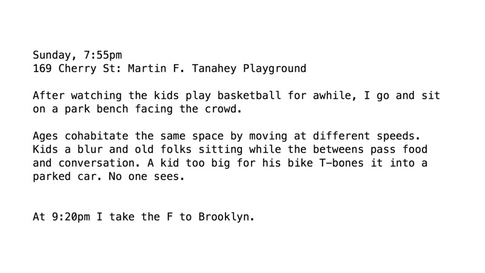
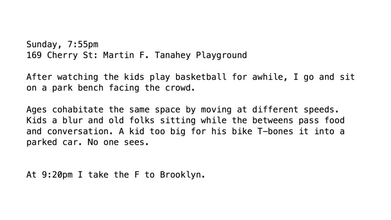

Over a period of one year, I tracked the GPS location of 1000 anonymous volunteers in NYC, at all times, via a custom app they installed on their phones. I used these data to train an artificial intelligence algorithm similar to what is used for self-driving cars, realistic computer voices, predictive policing, and myriad other emerging applications (an LSTM recurrent neural network). The algorithm was subsequently able to generate a new path around NYC that synthesized the daily behaviors of all of the volunteers.
In the spirit of Vito Acconci’s Following Piece or Sophie Calle’s Suite Vénitienne, I then followed the AI through the city for one week without stopping, using an app to get directions in real-time on my phone. I took photographs (with my phone) of the daily life I encountered and wrote in a journal.
The intelligence of AI is not spontaneous, but socialized. It is uncanny not because it acts as if it were human, but because it is humans, plural. They may be subsumed into the whole, but this whole is a trace of its parts. A dataset of movement around the city means that trace is literal. By following it, will I find them?